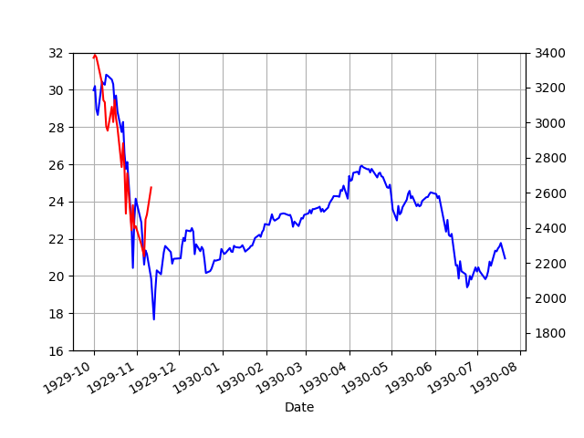
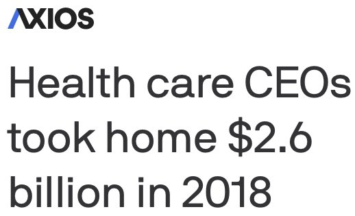

Week 13
Goldtards, libertards are eagerly waiting for a dollar collapse - "will it be our time..? is it this time.. is it?" Bitcointards are right next to them, hoping to get some spoils.
"@teatotalitarian
The damage without intervention is incalcuable. You can't sell to people with no $ or jobs. The economy was struggling post fires. You cant stimulate an economy by saddling all with more private debt. Be like NZ 80% subsidies and rent mortgage/freezes. NZ will emerge unscathed"
Former Fed Chair Ben Bernanke: “Nothing is going to work, the Fed is not going help, fiscal policy is not going to help, if we don’t get the public health right — if we don’t solve the problem of the virus."
Holy shit. Boris Johnson tested positive for COV. Hope he gets well soon.
Maybe there is no need for most optimization, an interpolation does huge amt of work already, there is a constant push-and-pull to explain all the data, the global minimum can be a simple side product to that.
Bcz I wanted to mimic work hours today feels like Friday - but at home 😐
You can retaliate, kick Jean Claude Van Damme out of the country.
Heee hehe - they just called u a waffle
"@michaelbirnbaum
Here's how Belgian media is describing the U.S.: 'In a country where most workers receive meager unemployment benefits, where pensions depend partly on the markets and where the savings rate is very low, ...the spread of the virus risks pushing millions into poverty.'"
"@ConnorSouthard
Landlords mad about capitalism happening to them has to be the funniest storyline in all of this"
"@ianbremmer
More than a third of the world’s population is currently on some form of coronavirus lockdown"
The correct graph, SP500 1929/2020 overlay. If match is correct, another fall is coming.

import pandas as pd, datetime
import pandas_datareader.data as web
today = datetime.datetime.now()
start=datetime.datetime(1920, 1, 1)
end=datetime.datetime(today.year, today.month, today.day)
df = web.DataReader("^GSPC", 'yahoo', start, end)[['Adj Close']]
df2 = pd.DataFrame(df[df.index > '1929-09-30'].head(200))
df2 = df2.reset_index()
arr = np.array(df[df.index > '2020-02-15'].head(200))
df2.ix[np.arange(len(arr)),'dep2'] = arr
print (len(df2))
df2 = df2.set_index('Date')
df2.columns = ['Depression 1','Depression 2']
ax1 = df2['Depression 1'].plot(color='blue', grid=True)
ax2 = df2['Depression 2'].plot(color='red', grid=True, secondary_y=True)
h1, l1 = ax1.get_legend_handles_labels()
ax1.set_ylim(16,32)
h2, l2 = ax2.get_legend_handles_labels()
ax2.set_ylim(1700,3400)
plt.savefig('depress.png')
Really? Youtube restricts ppl from using the word coronavirus, covid etc? That's a bit draconian..
If you’re a parent, we’re boosting your Canada Child Benefit payment. If you’re worried about making ends meet, we’re increasing your GST Credit. And if you’ve lost your income because of COVID-19, we’ve introduced the Canada Emergency Response Benefit to help you even more. ⤵️ https://t.co/X0HIqpjuqm
— Justin Trudeau (@JustinTrudeau) March 26, 2020
Mitsubishi Fuso to Begin Series Production of Fuel-Cell Trucks by late 2020s--Series production of #hydrogen #fuelcell trucks to start by the late 2020s--https://t.co/azXKjawA7K #hydrogennow #fuelcells #decarbonise #zeroemissions #hydrogeneconomy #h2 #zeroemission @fuelcellsworks pic.twitter.com/zAmMxVEGsl
— FuelCellsWorks (@fuelcellsworks) March 26, 2020
One official explained that clean #H2 could become critical for powering #energy heavy sectors #EUH2 #euhydrogenfuel #EUhydrogenfuelpartnership #EuropeH2 #europehydrogenfuel #EuropeanCommission #europeanunionhydrogenfuel #EuropeanUnionhydrogenfuelpartners https://t.co/adJLMfK8NQ
— Hydrogen Fuel News (@hydrogenfuelnew) March 26, 2020
Watching ST TNG "Borg episode". Lesson to remember - if the going gets tough, seperate the saucer section.
Ah of course u can top up phone internet quota through simple bank app. One less unnecessary interaction.
🔥🔥🔥
Which one, Rome or the United States?
— Zito (@_Zeets) March 26, 2020
Promising Results for Ammonia Tested in Combustion Engine - searching for the clean fuels of the future at @wartsilacorp https://t.co/RnwyG747Eg
— Atte Palomäki (@attep) March 26, 2020

Initial unemp claims. Over 3 million!
Dude that line upwards has no paralel. Effin freaky shit!
2020-03-21 3,283,000
Desync ASAP. Otherwise soc is bunch of ppl standing around with fingers up eachother's ass forming a circle fine for kumbaya not for anything else
"@djpardis
Still not sure if synchronized comms is where the future of work is at"
Great news: New Zealand to develop its first #hydrogen refueling network: https://t.co/UcWer0yY8C #cleanfuel
— Ballard Power (@BallardPwr) March 25, 2020
"@waltshaub
I did not predict 2020 being the year that human sacrifice made a comeback. I mean, having lived through the past 3 years nothing is surprising anymore, but it's quite a thing to behold when you see them calling for it"
"@spectatorindex
UNITED KINGDOM: 21 year old woman with no pre-existing medical conditions has died of coronavirus"
Slowdown happens bcz of misallocation of credit (money). That misalloc is due to ppl moving, improving in increments, follow the elevation to go up but find self on top of a smaller hill, the bigger one is elsewhere. Epitome of local optimum in optimization. What to do? Well gotta climb down first and move over to the other mountain.
Major retailers are telling landlords they're not going to pay rent. This is going to get messy real fast. https://t.co/CcPqiLJwHA
— Kim Bhasin (@KimBhasin) March 25, 2020
@RheaButcher
2004: don’t eat French fries or else you hate America
2008: wear a lapel pin or you don’t love your country
2016: kneel before the flag
2020: die for the economy
Hammersley points are the shite biaaatch!! I just saw the freakiest function being recreated from 20 Hammersley points. Twenty!
There is random and there is random, nam sayin?
As demand goes, so does oil.. With growth exp low the demand for oil would be less
"Oil price may fall to $10 a barrel as world runs out of storage space" -- theguardian.com
"But I know a company which can grow as much". Sure, that is possible. Others might think the same about other companies and buy their shares, expecting that kind of growth. My point is all of these people cannot be right at the same time. Hence, winners and losers.
Or at least there has to be.. If gov steps in and saves all the losers then there is no market. Enter socialism.
It'd take 20 years to go to 150% with 2% growth.
np.prod(np.ones(20)*1.02)
Out[1]: 1.485947395978355
Haha.. of course there is a Python package called tulipy. And it's a
"Financial Technical Analysis Indicator Library"!! 😂😂😂
In what future does the GDP increase to 150%? Every year it increases 2-3% if that. That "future" you speak of is too rosy, or "tulipy".
"So what if market cap / GDP was >150% Markets are about the future!"
I can't believe Prince Charles ate a bat.
— Adam Liaw (@adamliaw) March 25, 2020
"@wayne_vt
I know it’s time to short when all my friends who 'invest' start telling me it’s time to go long on this 'HISTORIC BUYING OPPORTUNITY'".
It's a vacation of sorts - all regular activities being frozen. From that angle, and for those who will make it, not bad.
I do the calculations but even I cant believe what I am seeing. I publish almost mechanically, and look at it myself and go WTF?
Politics was supposed to balance that but in many places politicians sold their souls to corporatism (another definition of fascism BTW).
"@EternalDago
Capitalism relies 100% on constant, limitless growth. It can’t even survive a 2 week slow down to adapt to the needs of human lives. Imagine thinking this could last forever"
FuelCell Energy’s 20 Megawatt #FuelCell Park Exceeded All Performance Expectations at Korea Southern Power Company--@FuelCell_Energy 20 megawatt highly reliable continuous clean platform serving customers in Incheon-https://t.co/xI2FLIyonD #Hydrogennow #decarbonise #hydrogen #h2 pic.twitter.com/8RyqRnh8Dd
— FuelCellsWorks (@fuelcellsworks) March 25, 2020
India, UK, South Africa, New Zealand: We're locking down to prevent mass death
— Oliver Willis (@owillis) March 25, 2020
America: Were opening up, the capitalism gods demand blood sacrifice
@IamKarenBoBaran
Capitalism 1970: " work hard, you too can be rich "
Capitalism 1990: " work hard & a few crumbs will fall down "
Capitalism 2020: " you should be willing to die in order to save the economy for the top percent "
Are you guys still all in for this?
"@notstevenwhite
I just talked to my grandparents and I didn't actually get the sense they want to die to save capitalism"
Today has made it very clear how many people would have absolutely justified slavery because “the economy”
— josie duffy rice (@jduffyrice) March 24, 2020
"@CaelainnH
Ireland has just effectively nationalised its health service in response to the pandemic. Private hospitals are being taken over. Everyone is now promised equal access to treatment, regardless of insurance. A massive change"
Enough is enough. To those who are still hanging out with friends or hosting dinner parties: Do the right thing and stay home. And while you’re at home, share this video to remind others they need to stay home too. #PlankTheCurve pic.twitter.com/b2q1fT81cO
— Justin Trudeau (@JustinTrudeau) March 25, 2020
Trump net approval at -6%. It hasnt seen these levels for nearly three years #538
"@JoSamps92
The Netherlands has unveiled a Multi-year Programmatic Approach for Hydrogen (MPAH) which aims to accelerate implementation of #hydrogen technologies and ensure they are “substantially embedded” by 2030"
"@tixhonjm
Cummins Increases Investment in Loop Energy and Fuel Cells for Commercial Transport Application"
"@BrentBeshore
Business owner friend applied for disaster relief funds yesterday and called me panicked. To get through the maze you had no choice but to lie.
Kicker? Financials must be submitted by fax, mail or email. Email max size could be 5 MB. His last year's financials alone were 18 MB"
India's lockdown is staggering. 1.3b people indoors for the next 21 days.
— Sriram Krishnan (@sriramk) March 24, 2020
"@girlsreallyrule
You should be willing to die at your shitty job so that rich people's grandkids have minimal interruptions in their lifestyles-it's the right thing to do. #GOPDeathPanels"
Russia is in the game, competing. Awesome.
EU will probably want to diversify since now sunshine can also produce the "green fuel". Merkel was in Africa some time back... It's good for Africa to have more $$ of course, from the EU standpoint, the next door neighbor.
Russia’s hydrogen bet sets up contest with Australia for Japanese market-Report says that Russia would be able to offer #hydrogen at a price of $3.38 per kg already between 2020-2025 and compete for 10-15% of world market by 2030-https://t.co/L0YFrp1tYG #hydrogennow #decarbonise pic.twitter.com/o48oq3Fy7z
— FuelCellsWorks (@fuelcellsworks) March 24, 2020
That fine moment when u realize you need another, darker color for covid cases bcz new cases might surpass the last bucket size on the map.
"@alexip
If schools are closed for a very long time, parents will find the vaccine sooner than scientists"
If the problem you're solving for is "why won't they take my money," you are doing a bad job negotiating. https://t.co/kR7xZ5JXhG
— Corey Frayer (@csfrayer) March 24, 2020
"@GeorgeGammon
Some say reaction to CV is worse than CV (Bc Econ damage)
I get it, but remember, CV didn’t force:
-
Mkt cap/gdp 150%+
-
Corp debt all time high
-
Consumer debt all time high
-
Dependency on ZIRP/QE
-
No savings
-
Econ built on debt+asset bubbles
CV is just a pin"
@lee_gsc
Warren's "excuse me????" moment here is so important. We can't afford to let Republicans gaslight the American people.
When used as last recourse, under med supervision it works. Dont eat the shit like it is candy 🤨🤷♂️🤷♂️
"@JohnDPMorgan
Lot of people seem determined to debunk hydroxychloroquine based on Trump’s comments. This is a cognitive fallacy: “Bad person says X therefore X is wrong”. Don’t fall for it. Meanwhile hospitals are incorporating HCQ into their protocols as fast as they can write them"
We all wish all this badness would go away with a great speech. That ship has sailed... Substantial changes, pronto. Otherwise we are screwed.
Junk at 12.39%
Haha.. Roub is a funny guy.. He is a guinea, but he is okay.
"@nouriel
Crisis [will be] not a V, U, L, W: a free fall down I !"
"@dandrezner
2010: Conservatives freak out over 'death panels.'
2020: Conservatives endorse reality version of 'Logan’s Run.'"
"@zunguzungu
When you have so many people arguing that an unknown number of dead bodies are a necessary price to pay to ensure the health of the economy they fetishize, calling those people a 'death cult' isn't hyperbole or exaggeration, it's literally the most adequate term to describe them"
An Asterix image.. Looks like the Heil Hitler salute doesn't it?
That's what they were.. the original Nazis. Rome 1,2 and 3. And the Han. The ghosts of these cultures still haunts us all.
Albert Uderzo RIP. I am a huge fan of Asterix. He portrayed the Romans very well.
Eurozone Services #PMI 28.4! pic.twitter.com/0aeaiJRAwe
— jeroen blokland (@jsblokland) March 24, 2020
Actually not even project, calculate dispersion on x,y for all z above level set..
It can't be this simple.
🤔 Black box func is a problem.
Then.. sample, in 3d project onto z-plane, calc dispersion, lower/higher z according to lower/higher dispersion 🤔🤔 ?
"@_pem_pem
it is truly amazing that capitalism is so weak that a few weeks of sustained absence of labor is enough to make it entirely collapse. [T]he rich are powerful in a way, but in another way, we now know exactly how easy it is to ruin all of their lives permanently"
"@DavidSegalRI
The let-them-die push comes after just one week of hanging out at home. If we did this for another 6 or 7 weeks and then went back to work as normal, the average American would still finish the year having worked around as many hours as Germans work in an typical year"
Why is global opt done in such haphazard fashion? Think 3d, I can have z plane cut f at any level and I bet I could calc the area of level set enclosed points. Move the plane up-down to find place where area is near zero which will be at global minimum?
"@MSDNCNews
#BREAKING:
America’s billionaires pledge to donate a combined $32 billion to their offshore bank accounts amid coronavirus pandemic"
Gangs in the Rio de Janeiro favelas have enforced a lockdown from 8pm tonight. The statement reads: "If the government won't do the right thing, organised crime will" pic.twitter.com/dK0wtAR3KA
— Andrew Cesare (@AndrewCesare) March 23, 2020

2000.. Are we there yet?
Stawks!! Stawks!!
Meanwhile Cramer sees the color of a ticker and tells himself a story about the economy
— Keith McCullough (@KeithMcCullough) March 23, 2020
Triage is a bitch.
Sad.
"BREAKING: Drs in Spain in anger & tears are forced to remove respirators from people 65 hrs & up to give to younger people."
Simulated annealing looks interesting (global opt method), tho lacking in some theoretical results (convergence).
"@AlbertMendonca
Greed reigns supreme in the US. The essence of capitalism. Even during a crisis their @gop goal is to steal the jewelry off a dead man.
Maybe the Wall of China wasn't about keeping the barbarians out, it was about keeping these fuckers in. I am nearing pest level annoyance here.
"@BonnieGlaser
China is desperate to deflect blame for the virus. Now Beijing is blaming Italy. Why not just leave the determination of origin to scientists?"
"@Sabrina_McDa
All the major cruise lines are asking for bailouts from the U.S. Government.
Yet, Disney Cruises sails under the Bahamian flag ... Celebrity Cruises under Liberian/Maltese flags & Carnival Cruises under the Panamanian flag - all to avoid U.S. taxes & employment law
Just sayin'"
"@anniebellet
My husband lost a friend today to Covid-19. Crossfitter, younger than us.
If you think you are young, you are healthy, you work out etc and you'll be fine... think again"
"Almost every function can be expressed as the difference of two convex functions (dc functions)" -- Reiner Horst
#Toyota and #Hino develop a 12-meter long, 25-tonne truck powered by #hydrogen. Your powertrain is equipped with two newly developed Toyota FC batteries for the new #MIRAI. Its autonomy is 600 km. #FCV #Fuelcell pic.twitter.com/UKy7jpjpg7
— Hydrogfan (@hydrogfan) March 23, 2020
Toyota and Hino to Jointly Develop Heavy-Duty Fuel Cell Truck
U.S. OEM Hillphoenix plans to install packaged low-charge ammonia units at a food distribution center operated by a multinational poultry company in Costa Rica, its first such installation in Latin America. #GoNatRefs https://t.co/ELtQrKLO55
— ammonia21.com (@ammonia21) March 23, 2020
Nothing breaks my work routine. I am essentially back to what I've been doing, albeit in a little different setting.
It's weird, Reps didn't have to end up being such corporate sluts. Appelbaum on why that could have happened.
👇🏼Unshakable!! https://t.co/MSjqTaEutv
— Sunchartist (@sunchartist) March 22, 2020
"@BCAppelbaum
Free advice for the Senate: Table the big business bailout for now. Boeing can wait. Pass what's most urgent: a small business bailout/ expansion of unemployment benefits/funding for healthcare.
(This advice is also free, and perhaps more useful, for the House.)"
Cat's jump was awesome
"@Fxhedgers
SCHUMER SAYS BILL PRESENTED BY REPUBLICAN SENATE LEADERSHIP HAD 'MANY, MANY PROBLEMS,' IS A 'LARGE CORPORATE BAILOUT'"
Current econ requires perfect sync. Do X constantly everyday so Y, Z happens. Corona puts a wrench into that. Then a solution could be to freeze all those dependencies in place. Have to go to work to pay rent and credit cards? But oops, no work, then gov delays rent and cc pay. Frozen in place. The market is needed for a different place, different card, but that's for later. Post corona.
That doesnt seem to be US' style though.. In US, it's mo money for mo problems, if not enough, even mo money, with bazookas, helicopters.
"@IsaacDovere
[Rand] Paul delayed a vote for several days by forcing an amendment on the Corona virus response, and then voted against the final bill. That bill includes a provision making testing free.
So he got a test that he voted against everyone else being able to get"
"@NorthmanTrader
Life imitates art.
This dialogue from 1995's Outbreak with Morgan Freeman and Dustin Hoffman"
In negotiations for economic crisis relief, some are pushing for a special carve-out just for Boeing & GE. That would be WRONG. Millions are losing jobs; we don’t need bailouts or corporate welfare—those companies should participate in the same liquidity programs as everyone else
— Ted Cruz (@tedcruz) March 21, 2020
If given the choice, please ensure I am put on a Ford or GM one. https://t.co/39ejmdb8sK
— Jin SEO (@JTSEO9) March 22, 2020
Cheaper Hydrogen: Enapter Electrolyser "We are very close to METI’s efficiency goal for 2030 – 10 YEARS AHEAD OF TIME: today we only need 4.4-kilowatt hours of electricity to produce one cubic metre of #hydrogen gas”-- https://t.co/C4IlHDbZJf #hydrogennow #decarbonise #fuelcell pic.twitter.com/wTsFHbZy0t
— FuelCellsWorks (@fuelcellsworks) March 22, 2020
Media play and policy are two different things. This punk should not be part of policy. He helped current gov to sell the thing that shall not be named, [cough! Brexit]!, sorry the cough was supposed to cover the next word there, but anyway, other than that, the spinner can cause serious damage.
[story about Cummins fuckup]
"@TruthGundlach
Goldman Sachs: 'State-level anecdotes point to an unprecedented surge in layoffs this week. These anecdotes suggest that the next jobless claims report....will show that initial claims rose to roughly 2.25 million.' That’d be up 10x"
"@Nouriel
Roubini warns on 'severe' coronavirus recession, says everyone needs $1K payment"
Researchers have found a new way of storing renewable energy. In this new electrolyzer, an improved ion-conducting membrane enables hydrogen generation from water without expensive catalysts.#RenewableEnergy #Renewables #EnergyTwitter https://t.co/NWLKgmBcDM
— Teague Egan ⚡ (@TeagueEgan) March 22, 2020
Good
"Coronavirus stops communal Muslim prayers"
Decentralization 👍
"@barriecassidy
Has anybody yet picked up on the fact that the [Australian] premiers are now leading the country? And just as well"
Which Asimov character would I like to be? Demerzel was awesome, and he was Daneel. But Councilman Trevize might is more similar, and he had that cool spaceship.
Roubini: "[Parapr, abt FED commercial paper facility] If you are A, AA, AAA you have access to that facility. BBB- dont have access. If u r among those firms who issued 8 trillion $ of junk bond, not investment grade, u have no access. Small biz do not have access to the bond market.. 95% companies do not have access"
Korea finished developing the 10 minute Covid-19 diagnostic kit and is now ramping up production. They plan to export 300.000 test-kits per week - pic.twitter.com/DpJCph9RT7
— Florian Witulski (@vaitor) March 21, 2020
"A lot of truth .. by @SheilaBair2013, @Michael_S_Barr & @JonahCrane. Time to finally recognize that money market funds are an arbitrage scheme to create the functional equivalent of bank deposits with lighter regulation?"

"@markmobility
BREAKING: U.S. hospitals are warning that they are so strapped for cash that without some financial relief, they will be unable to meet their payrolls in a matter of weeks and some could be forced to close just as coronavirus cases are surging"
"@DanPriceSeattle
I'm CEO of a small company that processes payments for other small biz. Our data shows 50% of small biz revenue is gone already.
Meanwhile Walmart stock is at record high & Amazon is hiring 100k people.
No joke: We're on a path toward small business extinction - swallowed whole"
"@kyletorpey
Being able to buy my medication over the counter in South America has been amazing. The past few times I've gone to get it in the US my pharmacy, insurance company, and doctor have had to all call each other and turn their nuclear keys at the same time in order for me to get it"
Life.. all about escaping nonconvexity into convexity, avoiding intractability. Making a P out of an NP.
"Europe’s Plagues Came From China, Study Finds
The waves of plague that twice devastated Europe and changed the course of history had their origins in China, a team of medical geneticists reported"
Xi apologized to FR and DE? But not to US?
Maybe that's why DJT keeps hitting them with China virus.
"@CaryGunn
We’ve developed a 15 min COVID-19 serology test, urgently need positive patient blood samples to validate. Calling for labs, researchers and positive patients in San Diego to reach out to us... "
"@JTSEO9
It is ironic that NY state fought Trump's travel ban and their patient zero came from Iran"
Niiicceeee
3 months ago e-cigarettes were the topic of hot debate
Kinda creative

"@KySportsRadio
Look at the difference between how the Kentucky Governor and Tennessee Governor handled the Coronavirus"
"@JaneSlavin
Literally everything you’re watching on telly at the moment is made by the self employed. If you think we’re just frivolous artists who need only £4K a year, try switching off the TV for 3 days and then get back to me. Also the books you’re reading and the games you’re playing"
"@JTSEO9
For those complaining for years that Germany should have been dumping cash into the system long before this. Germany knows when to spend money. Like any good saver, instead of doing buybacks at ATHs, they are coming into the market as a distressed investor.
'@OliverRakau
Draft law for new & scaled-up German rescue fund: €600bn of which 400bn for guarantees, 100bn for equity stakes'"
The full report of the U.S. Hydrogen Road Map was released.
— FuelCellPartnership (@CaFCP) March 20, 2020
The U.S. is now one of 18 countries, representing 70 percent of global GDP, that have developed detailed strategies for deploying hydrogen energy solutions. https://t.co/DdrjHNherV#hydrogen pic.twitter.com/GxamlXVHv3
Full Report for U.S. Hydrogen Road Map Released
President of Slovakia
How is this not a scene from a
— Quill18 (@quill18) March 21, 2020
midrange sci-fi tv show? pic.twitter.com/AfKmSCzRBn
"@shamuskhan
As 2.5M lose their jobs in the middle of a pandemic, remind me again why we binding health insurance to employment is a good idea"
Water Splitting Observed in the Nano Range--At rough spots on a catalyst surface, water is split into #hydrogen and oxygen in a more energy-efficient manner than at smooth ones--https://t.co/IDh7aiFhis #hydrogennow #decarbonise #zeroemissions #hydrogeneconomy #fuelcell #fuelcells pic.twitter.com/j3tIqMtKlu
— FuelCellsWorks (@fuelcellsworks) March 21, 2020
"@thehill
Sen. Romney: 'I'd like to learn from those countries that were successful. Let's not follow Italy, let's follow South Korea.'"
"@GeochemOz
The #coronavirus epidemic has now already killed more people than the Ebola epidemic and it's climbing exponentially"
No. You might die. Stick it out. https://t.co/DvG6flMmxO
— Norman Swan (@normanswan) March 20, 2020